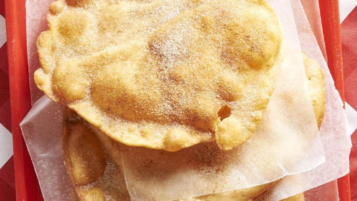

World Famous Elephant Ears Recipe

Introduction
Have you ever wondered how to make those delicious elephant ears that people love to eat during the state fair every year? You're in luck, because, below, you can find my own delicious recipe for homemade elephant ears to make in your own home.
Ingredients
- Dry Ingredients
- 2 Tablespoons White Sugar
- 2 Tablespoons Active Dry Yeast
- 4 Cups All-Purpose Flour
- 3 Tablespoons Ground Cinnamon
- 6 Tablespoons White Sugar
- Wet Ingredients
- ⅜ Cup Shortening
- 1 Quart Oil for Frying
Directions
- In small saucepan over medium heat, combine milk, salt, 2 tablespoons sugar and shortening. Heat until shortening melts and sugar dissolves. Remove from heat and let cool to lukewarm, 110 degrees F (43 degrees C). Sprinkle in yeast and let sit until foamy.
- Transfer mixture to large bowl, and stir in flour to make a dough. Knead until smooth, cover and let rise 30 minutes.
- In a large heavy skillet or deep fryer, heat 1 inch of oil to 375 degrees F (190 degrees C).
- Roll out 1 to 2 inch balls of dough into thin sheets. Fry sheets 1 to 2 minutes on a side, until puffed and golden. Drain on paper towels.
- Combine cinnamon and 6 tablespoons sugar. Sprinkle over warm pastries.
Serve and Enjoy!
Notes
For best results, make sure you wait the entire length of time specified above to let the bread rise. Stopping this process early will result in overly-flat bread which is much less visually appealing.
Baking Temperature Conversion Chart
Below is a helpful chart for individuals whose stove may use the Celsius scale.
| Temperature Conversions |
| Fahrenheit (oF) |
Celsius (oC) |
| 225 |
110 |
| 250 |
130 |
| 275 |
140 |
| 300 |
150 |
| 325 |
165 |
| 350 |
177 |
| 375 |
190 |
| 400 |
200 |
| 425 |
220 |
| 450 |
230 |
Contact
If you have any questions about this recipe or about cooking in general, click on the link below to send me an email using the link below.
Send Email
Original Recipe
If you'd like to see the original where I found this recipe, please visit the hyperlink found below
Elephant Ears Recipe from allrecipes.com